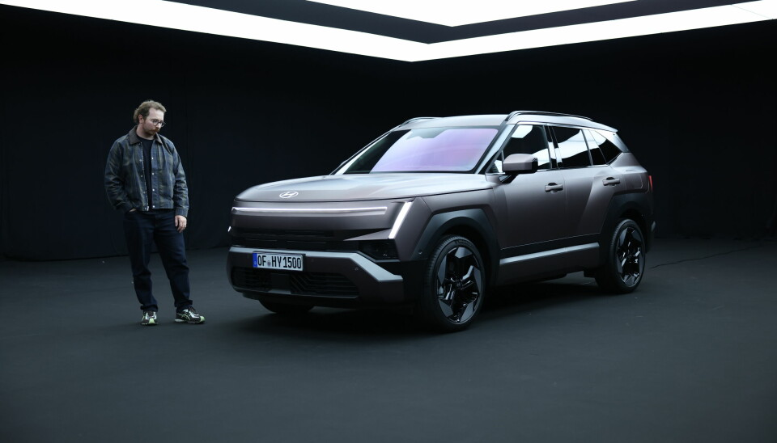

for DC Advanced UX Team.Vivi · Yohan · Libby · Lim Jisu · Katey · Anna
Back Issue

Cockpit
Hyundai's Tucson rule: know the car within 100 yards
Car Design News sits down with Hyundai Motor Europe's chief designer Eduardo Ramirez and product head Christopher McKinnon on the fifth-generation Tucson, the one with the 17-inch Pleos Connect screen and a column shifter. The brief was to cut the gadget count: child presence detection and trailer reverse assist came out of customer clinics, and McKinnon's test is that you can adjust the mirrors without taking your eyes off the road and know how the car works 'within the first 100 yards'. Double glazing makes the cabin a cocoon; the deep-drawn 'padded shoulders' at the rear took repeated tooling iterations.
Car Design News专访现代欧洲首席设计师Eduardo Ramirez与产品负责人Christopher McKinnon，谈第五代途胜（Tucson）。这台车配17英寸Pleos Connect屏和怀挡，但设计目标是减少“功能堆砌”：儿童遗留检测、拖车倒车辅助都来自用户调研；McKinnon的标准是不用移开视线就能调后视镜，“开出前100码就知道这车怎么用”。双层玻璃把座舱做成“茧”，车尾深拉伸的“垫肩”反复迭代模具才做出来。
카 디자인 뉴스가 현대차 유럽 수석 디자이너 에두아르도 라미레즈와 제품 총괄 크리스토퍼 매키넌을 만나 5세대 투싼을 이야기했다. 17인치 플레오스 커넥트 화면과 칼럼 시프터를 갖췄지만 목표는 '기능 개수 경쟁'을 줄이는 것이었다. 어린이 잔류 감지와 트레일러 후진 보조는 고객 클리닉에서 나왔고, 매키넌은 시선을 떼지 않고 미러를 조정할 수 있어야 하며 '첫 100야드 안에 차를 이해해야 한다'고 말한다. 이중 유리가 실내를 고치처럼 감싸고, 후면의 깊게 성형한 '패드 숄더'는 금형을 여러 번 고쳐 완성했다.
Ioniq 3 on sale: Pleos Connect's first European car
Hyundai has put the Ioniq 3 on sale in the UK from £18,495 with the £3,750 grant, the first car in Europe to run Pleos Connect, its Android Automotive-based OS with phone-style apps and a customisable home screen. The centre display is 12.9 or 14.6 inches depending on trim, and the driver display is optional, so the base car has no conventional cluster. The 4,155 mm 'aero hatch' sits on a 400 V platform with 42 or 61 kWh packs for 213 or 308 WLTP miles, Cd 0.263, Digital Key 2, Plug & Charge and V2L. Europe only; no US plans.
현대차가 아이오닉 3를 영국에서 보조금 3,750파운드를 포함해 1만 8,495파운드부터 판매한다. 유럽에서 플레오스 커넥트를 처음 적용한 차로, 안드로이드 오토모티브 기반에 스마트폰식 앱과 사용자 정의 홈 화면을 갖췄다. 중앙 화면은 트림에 따라 12.9인치 또는 14.6인치이고, 운전자 디스플레이는 옵션이라 기본형에는 전통적인 클러스터가 없다. 길이 4,155mm의 '에어로 해치'는 400V 플랫폼에 42 또는 61kWh 배터리를 얹어 WLTP 213 또는 308마일을 달린다. 공기저항계수 0.263, 디지털 키 2, 플러그 앤 차지, V2L을 지원하며 유럽 전용이다.
Xsolla by Pentagram: a Frutiger Aero archive with a mascot
Pentagram partners Luke Powell and Jody Hudson-Powell have rebranded Xsolla, the games-payments company, around 'the Xsolla Archive': a liminal warehouse of gaming artefacts with the tagline 'All the things'. A geometric star mascot, Sol, is a fully rigged 3D character with a behaviour set that acts like a UI assistant, and its silhouette sits inside the wordmark and the icon taxonomy. Type is Pilat, a square grotesque; the system runs in a bright industrial light mode for B2B and a cinematic dark mode for gamers, with skeuomorphic 3D assets that nod to Frutiger Aero, Wii-era console menus and THX 1138.
Pentagram合伙人Luke Powell与Jody Hudson-Powell为游戏支付公司Xsolla做了新品牌，核心概念是“Xsolla档案馆”：一个堆满游戏文物的临界空间，口号“All the things”。几何星形吉祥物Sol是完整绑定的3D角色，带一套行为逻辑，像UI助手一样反应，其剪影嵌进字标和图标分类系统。字体用方正怪诞体Pilat；系统分B2B用的明亮工业感浅色模式和面向玩家的电影感深色模式，拟物3D素材致敬Frutiger Aero、Wii时代的主机菜单和《THX 1138》。
펜타그램 파트너 루크 파월과 조디 허드슨 파월이 게임 결제 기업 엑솔라의 브랜드를 '엑솔라 아카이브'라는 개념으로 다시 만들었다. 게임 유물이 쌓인 경계적 공간이며 태그라인은 'All the things'다. 기하학적 별 모양 마스코트 솔은 완전히 리깅된 3D 캐릭터로, 행동 세트를 갖춰 UI 어시스턴트처럼 반응하고 실루엣이 워드마크와 아이콘 분류 체계에 들어간다. 서체는 사각 그로테스크 필라트이고, B2B용 밝은 인더스트리얼 라이트 모드와 게이머용 영화적 다크 모드로 나뉜다. 스큐어모픽 3D 요소는 프루티거 에어로, Wii 시대 콘솔 메뉴, 영화 THX 1138을 참조했다.
Mike Klubnika, the developer of Buckshot Roulette, hosted a jam with more than 20 indie developers and shipped the result on 1 October as Volume.art, free in the browser or as a download. It is a collection of 25-plus volume controls, each one working differently, so the game is working out how to operate the slider before you can set the level. The look is polished Flash-era, the source is Reddit's r/baduibattles, and the whole thing was built between June and August. For anyone who designs a real volume control, it is a playable catalogue of every affordance mistake.
'벅샷 룰렛' 개발자 마이크 클루브니카가 20명 넘는 인디 개발자와 잼을 열고 그 결과물을 10월 1일 볼륨.아트로 공개했다. 브라우저에서 무료로 즐기거나 내려받을 수 있다. 25개 이상의 볼륨 컨트롤이 각각 다르게 작동해, 슬라이더의 조작법을 알아내는 것 자체가 게임이 된다. 다듬어진 플래시 게임 같은 외형에, 레딧의 r/baduibattles에서 영감을 얻어 6월부터 8월까지 두 달 만에 만들었다. 실제 볼륨 컨트롤을 설계하는 사람에게는 직접 만져볼 수 있는 어포던스 실패 사례집이다.
Fiat 500e and Grecale go hands-free on Wayve's AI Driver
Stellantis has shown a Fiat 500e and a Maserati Grecale running 'STLA AutoDrive powered by Wayve', a Level 2++ system that drives hands-free door to door on highways and in cities. Wayve's end-to-end AI Driver is camera-first with radar, lidar optional, and mapless, so no HD maps are needed, which Stellantis says cuts cost and eases rollout across brands. Today's Hands-Free Active Driving Assist covers 200,000 miles of North American roads; the first production car with the new stack arrives in North America in 2028. What the driver sees during a hands-free handover is not yet described.
Stellantis展示了搭载“STLA AutoDrive powered by Wayve”的菲亚特500e和玛莎拉蒂Grecale原型车，L2++级，可在高速和城市道路脱手、点到点行驶。Wayve的端到端AI Driver以摄像头为主、辅以雷达，激光雷达可选，且不依赖高精地图，Stellantis称这样成本更低、更容易跨品牌推广。现有的Hands-Free Active Driving Assist只覆盖北美20万英里道路；新系统的首款量产车2028年在北美上市。脱手接管时驾驶者看到什么，目前还没有说明。
스텔란티스가 '웨이브 기반 STLA 오토드라이브'를 실은 피아트 500e와 마세라티 그레칼레 프로토타입을 공개했다. 고속도로와 도심에서 손을 떼고 문에서 문까지 달리는 레벨 2++ 시스템이다. 웨이브의 엔드 투 엔드 AI 드라이버는 카메라 중심에 레이더를 더하고 라이다는 선택 사양이며, 고정밀 지도가 필요 없어 비용과 브랜드 간 확장이 쉽다고 설명한다. 현재의 핸즈프리 액티브 드라이빙 어시스트는 북미 도로 20만 마일만 지원한다. 새 시스템의 첫 양산차는 2028년 북미에서 나온다. 핸즈프리 전환 시 운전자가 보게 될 화면은 아직 공개되지 않았다.
Brabus × Fragment Urban E: ten bikes, black and white only
Brabus, Hiroshi Fujiwara's Fragment Design and DAB Motors showed a ten-unit Urban E at ComplexCon in Los Angeles. The standard bike's dark bodywork and colour accents give way to a strict black-and-white scheme: exposed carbon on the front fender, belly pan, motor cover and rear winglets, white carbon wheel covers, white Brembo calipers and a white quilted leather seat. The drivetrain is unchanged, a 27 kW motor with up to 475 Nm at the wheel on a 72 V, 7.1 kWh pack, for about 150 km in town and 120 km/h. The dash is still a 2.8-inch LCD. $50,000, or €53,550 with VAT.
브라부스, 후지와라 히로시의 프래그먼트 디자인, DAB 모터스가 로스앤젤레스 컴플렉스콘에서 10대 한정 어반 E를 선보였다. 기본형의 어두운 차체와 컬러 포인트 대신 흑백만 쓴다. 앞 펜더, 벨리 팬, 모터 커버, 리어 윙렛에 카본을 노출하고, 흰색 카본 휠 커버와 흰색 브렘보 캘리퍼, 흰색 퀼팅 가죽 시트를 더했다. 구동계는 그대로다. 27kW 모터로 휠 토크 최대 475Nm, 72V 7.1kWh 배터리로 도심 약 150km, 최고 120km/h다. 계기판은 여전히 2.8인치 LCD다. 가격은 5만 달러, 유럽은 부가세 포함 5만 3,550유로다.
Google Maps: a McLaren F1 car replaces the blue arrow
Google Maps has added a temporary 3D driving avatar of the McLaren Formula 1 car, replacing the blue navigation arrow on the phone and, more interestingly, on the car's own screen through Android Auto and Apple CarPlay. It sits under Settings, Your vehicles, Driving avatar, is a server-side rollout and is labelled 'Celebrate the United States Grand Prix with the official team avatar, available until November 23, 2026', timed to the Las Vegas race on 22–25 October. A sponsor skin on the nav puck is a small thing, but it is a brand partnership reaching the in-car map UI.
Google Maps新增一个限时3D驾驶图标：迈凯伦F1赛车，替换默认的蓝色导航箭头，不仅在手机上显示，也通过Android Auto和Apple CarPlay显示在车机屏幕上。入口在“设置—我的车辆—驾驶头像”，服务端逐步推送，标注“庆祝美国大奖赛，官方车队头像，2026年11月23日前可用”，对应10月22日至25日的拉斯维加斯站。导航标记上的一层赞助商皮肤虽小，却是品牌合作直接进入车内地图界面的案例。
구글 지도가 맥라렌 포뮬러 1 머신 모양의 3D 주행 아바타를 한시적으로 추가했다. 파란 내비게이션 화살표를 대체하며, 스마트폰뿐 아니라 안드로이드 오토와 애플 카플레이를 통해 차량 화면에도 표시된다. 설정의 '내 차량, 주행 아바타'에서 고르며 서버 단에서 순차 배포 중이다. '미국 그랑프리를 기념하는 공식 팀 아바타, 2026년 11월 23일까지'라는 안내가 붙었고, 10월 22일부터 25일까지 열리는 라스베이거스 레이스에 맞췄다. 내비 마커의 스폰서 스킨은 작은 변화지만 브랜드 제휴가 차량 내 지도 UI까지 들어온 사례다.
Benda Dark Flag 950: a 109 hp V4 with an 800-nit dash
Benda's Dark Flag 950 is a 948 cc, 16-valve V4 cruiser with a claimed 108.8 hp at 9,000 rpm and 85 Nm, belt drive, a slipper clutch and cylinder deactivation at idle. The spec sheet reads like a phone's: the 3.6-inch TFT quotes 800 nits and a 120-degree viewing angle, with cruise control and USB-A and USB-C ports. The long, low chassis has a 1,590 mm wheelbase, a 690 mm seat, forward controls and twin 320 mm Brembo discs. Five colours: Obsidian Black, Glimmering White, Burgundy Red, Mountain Silver and Prism Grey. Public debut at EICMA on 3 November, European dealers by late November, price to be confirmed.
奔达Dark Flag 950是一台948毫升16气门V4巡航车，标称108.8马力/9000转、85牛米，皮带传动、滑动离合，怠速可断缸。参数表像手机：3.6英寸TFT仪表标注800尼特亮度和120度可视角，配定速巡航、USB-A和USB-C接口。又长又低的车架轴距1590毫米、座高690毫米、前置脚踏，前双320毫米Brembo碟刹。五种颜色：曜石黑、微光白、酒红、山岳银、棱镜灰。11月3日EICMA公开亮相，11月底进入欧洲经销商，价格待定。
벤다 다크 플래그 950은 948cc 16밸브 V4 크루저로, 9,000rpm에서 108.8마력과 85Nm를 내며 벨트 구동, 슬리퍼 클러치, 공회전 시 실린더 휴지 기능을 갖췄다. 사양표는 스마트폰 같다. 3.6인치 TFT 계기판에 800니트 밝기와 120도 시야각을 명시했고, 크루즈 컨트롤과 USB-A, USB-C 포트가 있다. 길고 낮은 차체는 휠베이스 1,590mm, 시트고 690mm, 포워드 컨트롤에 앞 320mm 브렘보 더블 디스크를 쓴다. 옵시디언 블랙, 글리머링 화이트, 버건디 레드, 마운틴 실버, 프리즘 그레이의 다섯 색상이다. 11월 3일 EICMA에서 공개되고 11월 말 유럽 딜러에 들어가며 가격은 미정이다.
Busy Bodies: a screen-printed factory of tiny workers
Kate Renshaw-Lewis's hand-drawn short Busy Bodies is now online on Vimeo after an official selection at Sundance 2026 and the Animated Shorts Grand Jury Prize at Slamdance. Tiny creature-workers run a domestic factory under a pair of giant human hands, making red rubber gloves and packing vague fish products, a Rube Goldberg chain inspired by a 'made by hand' sticker on a tuna sandwich. Every frame was drawn digitally, then printed at about two inches wide through a mix of screen printing and inkjet, so the palette of reds, greens and yellows comes from the limits of the screens. Digital colour by Arius Ziaee.
Kate Renshaw-Lewis的手绘短片《Busy Bodies》入选2026圣丹斯、获Slamdance动画短片评审团大奖后，现已在Vimeo上线。一群小小的生物工人在一双巨大人手之下经营家庭工厂，生产红色橡胶手套、包装来路不明的鱼制品，像一台鲁布·戈德堡机器，灵感来自金枪鱼三明治上的“手工制作”贴纸。每一帧先数字手绘，再以丝网印刷加喷墨打印成约两英寸宽的画面，红、绿、黄的配色正来自丝网的限制。数字上色：Arius Ziaee。
케이트 렌쇼 루이스의 손그림 단편 '비지 바디스'가 2026 선댄스 공식 선정과 슬램댄스 애니메이션 단편 심사위원 대상을 거쳐 비메오에 공개됐다. 작은 생물 노동자들이 거대한 사람 손 아래에서 가정 공장을 돌리며 빨간 고무장갑을 만들고 정체 모를 생선 제품을 포장한다. 참치 샌드위치의 '손으로 만듦' 스티커에서 출발한 루브 골드버그 장치다. 모든 프레임을 디지털로 그린 뒤 스크린 인쇄와 잉크젯을 섞어 약 2인치 너비로 인쇄했고, 빨강·초록·노랑의 팔레트는 스크린의 제약에서 나왔다. 디지털 채색은 아리우스 지아이가 맡았다.
Sudo SP-01: a $249 player that brings back the click wheel
New Matter's Sudo SP-01 is a single-purpose music player with a tactile wheel under a 2.73-inch, 320 × 320 touchscreen, in a 103.5 × 58.6 × 8.5 mm body with visible hex screws at the corners for serviceability. Sudo OS is a flat list, Playlists, Artists, Albums, Songs, with nothing algorithmic; now-playing uses the album art as background. 64 GB inside, microSD to 1 TB, 20-plus hours, USB-C, a 3.5 mm jack and Bluetooth. Four colours: Silver, Basalt, Forest, Tangerine. $249 expected, a $50 refundable reservation, shipping from Q4 2027 to the US, Canada, UK, Australia and New Zealand. Renders only for now.
New Matter的Sudo SP-01是一台只做一件事的音乐播放器：2.73英寸320×320触摸屏下方是一枚实体转轮，机身103.5×58.6×8.5毫米，四角外露六角螺丝便于维修。Sudo OS是扁平列表——播放列表、艺人、专辑、歌曲，没有任何算法推荐；正在播放界面以专辑封面做背景。64GB存储、microSD最高1TB、20小时以上续航，USB-C、3.5毫米耳机口和蓝牙。四色：银、玄武岩、森林绿、橘。预计售价249美元，50美元可退预订，2027年四季度起发往美、加、英、澳、新西兰。目前只有渲染图。
뉴 매터의 수도 SP-01은 한 가지 일만 하는 음악 플레이어다. 2.73인치 320×320 터치스크린 아래에 촉각 휠을 두고, 103.5×58.6×8.5mm 본체 모서리에 수리용 육각 나사를 드러냈다. 수도 OS는 재생목록, 아티스트, 앨범, 곡의 평면 목록이며 알고리즘 추천이 없다. 재생 화면은 앨범 아트를 배경으로 쓴다. 64GB 저장공간, 최대 1TB 마이크로SD, 20시간 이상 배터리, USB-C, 3.5mm 단자, 블루투스를 갖췄다. 색상은 실버, 바솔트, 포레스트, 탠저린이다. 예상 가격 249달러, 환불 가능한 50달러 예약금, 2027년 4분기부터 미국·캐나다·영국·호주·뉴질랜드에 출하한다. 아직은 렌더링뿐이다.
Gboard's conveyor keyboard: the keys come to your finger
Google Japan's Gboard team, now on its fifteenth joke-but-working keyboard, has built one where the keycaps ride looped conveyor belts around rollers in a tall blue frame: you keep a finger in place, watch for the letter to arrive and press as it passes. Each belt carries 29 keys and types upper and lower case. It was announced on 1 October, a nod to the 101-key standard rather than April Fools, and is not for sale; open-source plans are published for makers. Silly, but it is a clean inversion of the usual rule: the control moves to the finger, which is exactly the problem of eyes-off input on a steering wheel.
구글 재팬 지보드 팀이 열다섯 번째 '농담이지만 작동하는' 키보드를 만들었다. 키캡이 높은 파란 프레임 속 롤러를 도는 순환 컨베이어 벨트에 실려 움직이고, 손가락은 한 곳에 둔 채 원하는 글자가 지나갈 때 누른다. 벨트 하나에 29개 키가 실리며 대소문자를 모두 입력한다. 101키 표준에 빗대 10월 1일에 발표했고 판매하지 않지만 제작자용 오픈소스 도면을 공개했다. 우스꽝스럽지만 규칙을 깔끔하게 뒤집었다. 손이 키로 가는 대신 키가 손가락으로 온다는 점은 스티어링 휠 위의 눈을 떼지 않는 입력이 풀어야 할 바로 그 문제다.
Mobvoi TicNote: a watch with one button, for recording
Mobvoi's TicNote is a wrist device built around a single physical record button rather than a menu: press and hold to record a conversation, double-press for a quick thought of up to 60 seconds, and press again mid-recording to flag an important line. It works offline with no phone, transcribes live in 17 languages, and turns recordings into AI summaries and mind maps in the companion app; Mobvoi claims more than 24 hours of continuous recording and 200 hours of local storage. $249, $199 at launch. Display size and materials are not yet published, and recording from the wrist raises the obvious consent questions.
몹보이의 틱노트는 메뉴 대신 물리 녹음 버튼 하나를 중심으로 설계한 손목 기기다. 길게 누르면 대화를 녹음하고, 두 번 누르면 최대 60초의 짧은 메모를 남기며, 녹음 중 다시 누르면 중요한 대목을 표시한다. 휴대폰 없이 오프라인으로 작동하고 17개 언어를 실시간 전사하며, 동반 앱에서 AI 요약과 마인드맵을 만든다. 연속 녹음 24시간 이상, 로컬 저장 200시간을 주장한다. 가격은 249달러, 출시가는 199달러다. 화면 크기와 소재는 아직 공개되지 않았고, 손목에서 녹음한다는 점은 당연히 동의 문제를 남긴다.
Stockholm studio Malmsten Hellberg designed 39 posters and flyers for NonStop Entertainment's Nordic release of Agnès Varda's complete filmography, each 25 × 70 cm and each set in a single, different typeface from the French foundry 205TF, used for every line down to the copyright notice. The list runs through Andersen, Helvetius, Cardone, Yorick, Thelo, Molitor, Seabirds, Plaax, Immortel Colera, Muoto, Pinokio, Beretta Sans, Louize, Gando, Garaje, Milling, Exposure, Salmanazar, Album Sans, Basetica and more, on a pastel palette colour-coded by genre. One typeface per poster is the whole identity.
스톡홀름 스튜디오 말름스텐 헬베리가 논스톱 엔터테인먼트의 아녜스 바르다 전작 북유럽 개봉을 위해 포스터와 전단 39종을 디자인했다. 각 25×70cm이며 프랑스 활자 제작소 205TF의 서로 다른 서체 하나씩을 골라 저작권 문구까지 모든 글자를 그 서체로 짰다. 안데르센, 헬베티우스, 카르도네, 요릭, 텔로, 몰리토르, 시버즈, 플락스, 이모르텔 콜레라, 무오토, 피노키오, 베레타 산스, 루이즈, 간도, 가라주, 밀링, 익스포저, 살마나자르, 앨범 산스, 바세티카 등이 쓰였고 파스텔 팔레트를 장르별로 나눠 입혔다. 포스터 한 장에 서체 하나, 그것이 아이덴티티의 전부다.
Ronan Mahon: a coffee machine rebuilt from its CAD drawing
Creative director and technical artist Ronan Mahon made a short film for Adobe to open a webinar on taking CAD data to a digital twin for product visuals. A coffee machine returns to its technical drawing, then rebuilds itself through materials, graphics and lighting before cycling through colours, finishes and settings on the same product. Mahon modelled and UV-mapped it from the STEP file Adobe supplied, textured it in Substance 3D Painter with Adobe's own colourways and Substance 3D Assets materials, and animated and rendered it in Unreal Engine. The drawing-to-materials transition is a ready-made language for a CMF configurator.
创意总监兼技术美术Ronan Mahon为Adobe做了一支短片，用作“从CAD数据到数字孪生、再到产品视觉”网络研讨会的开场。一台咖啡机退回成技术图纸，再由材质、图形和灯光逐层重建，接着在同一产品上切换配色、表面处理和设置。Mahon以Adobe提供的STEP模型建模并展UV，在Substance 3D Painter里用Adobe自家配色和Substance 3D Assets素材库材质上色，动画和渲染在Unreal Engine中完成。从线稿到材质的这套过渡，可以直接拿来做CMF配置器。
크리에이티브 디렉터 겸 테크니컬 아티스트 로넌 마혼이 어도비를 위해 단편 영상을 만들었다. CAD 데이터를 디지털 트윈으로 옮겨 제품 비주얼을 만드는 웨비나의 오프닝이다. 커피 머신이 기술 도면으로 되돌아갔다가 재질, 그래픽, 조명을 거쳐 다시 조립되고, 같은 제품 위에서 색상과 마감, 설정을 바꿔 보여준다. 마혼은 어도비가 제공한 STEP 모델로 모델링과 UV 작업을 하고, 서브스턴스 3D 페인터에서 어도비의 컬러웨이와 서브스턴스 3D 애셋 재질로 텍스처를 입힌 뒤 언리얼 엔진에서 애니메이션과 렌더링을 마쳤다. 선 도면에서 재질로 넘어가는 전환은 CMF 컨피규레이터에 그대로 쓸 수 있는 언어다.
Ducati Grand Tour: radar and a bike that lowers itself
Ducati's 2027 Multistrada V4 S Grand Tour ships with the touring kit fitted: 60-litre colour-matched side cases, heated grips and seats, LED auxiliary lights, dynamic indicators and a centre stand, in a red livery with blacked-out frame, swingarm, bars and triple clamps. The rider-assist stack is the richest on a tourer: front and rear radar for adaptive cruise, blind-spot and forward-collision warning, Skyhook EVO semi-active suspension and an Automatic Lowering Device that drops the bike up to 30 mm below 10 km/h, all on a 6.5-inch TFT with navigation. 170 hp V4 Granturismo, $30,995, Europe in November, the US in December.
杜卡迪2027款Multistrada V4 S Grand Tour把旅行套件直接出厂装齐：60升同色边箱、加热握把和座椅、无钥匙油箱盖、LED辅助灯、动态转向灯和中撑，专属红色涂装配黑化车架、摇臂、车把和三角台。骑行辅助是旅行车里最完整的一套：前后雷达支持自适应巡航、盲区和前向碰撞预警，Skyhook EVO半主动悬挂，自动降低装置在10公里/小时以下把车身下降最多30毫米，全部显示在带导航的6.5英寸TFT上。170马力V4 Granturismo，30995美元，11月欧洲、12月美国上市。
두카티 2027 물티스트라다 V4 S 그랜드 투어는 투어링 키트를 공장에서 모두 장착한다. 60리터 동색 사이드 케이스, 열선 그립과 시트, 키리스 연료 캡, LED 보조등, 다이내믹 방향지시등, 센터 스탠드를 갖추고, 프레임과 스윙암, 핸들바를 검게 칠한 전용 레드 리버리를 입는다. 라이더 보조 장비는 투어러 중 가장 풍부하다. 앞뒤 레이더로 어댑티브 크루즈와 사각지대, 전방 충돌 경고를 제공하고, 스카이훅 EVO 반능동 서스펜션과 10km/h 이하에서 차고를 최대 30mm 낮추는 자동 하강 장치를 더했으며, 모두 내비게이션이 있는 6.5인치 TFT에 표시된다. 170마력 V4 그란투리스모, 3만 995달러, 11월 유럽과 12월 미국에 출시된다.
Fjällräven trail banners: landscapes cut from old jackets
For Fjällräven Classic UK 2026, a three-day, 50 km trek from Great Langdale to Muncaster for about 200 walkers, Emma and Andrew Groves of Miscellaneous Adventures made five large appliqué fabric banners hung from hazel poles in Langdale. They are sewn on a domestic machine from offcut and donated gear fabrics, including Fjällräven's green G-1000, in yellow, burgundy, green, tan, black and red. The process ran from landscape sketches to hand-drawn paper templates to hand-cut fabric, big pieces pinned, small ones glued, then stitched down; mountains, rivers, lakes and woodland reduced to geometric shapes that read at a distance.
그레이트 랭데일에서 먼캐스터까지 사흘간 50km를 걷는 약 200명의 트레킹 행사 피엘라벤 클래식 UK 2026을 위해, 미셀러니어스 어드벤처스의 엠마와 앤드루 그로브스가 대형 아플리케 천 배너 다섯 장을 만들어 랭데일의 개암나무 장대에 걸었다. 가정용 재봉틀로 자투리와 기증받은 장비 원단을 꿰맸고, 피엘라벤의 초록 G-1000도 들어갔다. 색은 노랑, 버건디, 초록, 황갈색, 검정, 빨강이다. 풍경 스케치에서 손으로 그린 종이 본, 손으로 자른 천으로 이어졌고, 큰 조각은 핀으로, 작은 조각은 풀로 고정한 뒤 박음질했다. 산과 강, 호수, 숲을 멀리서도 읽히는 기하 도형으로 줄였다.